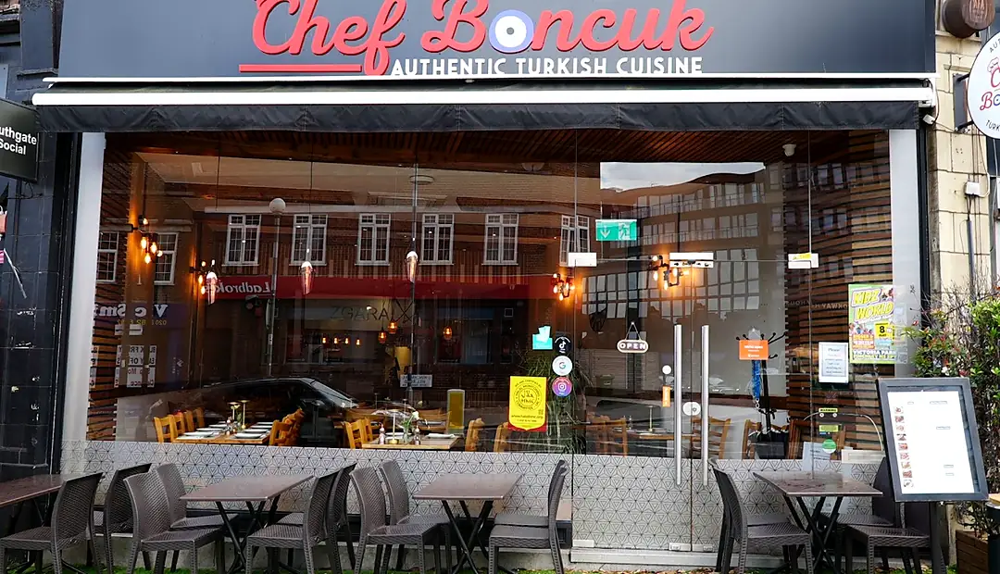
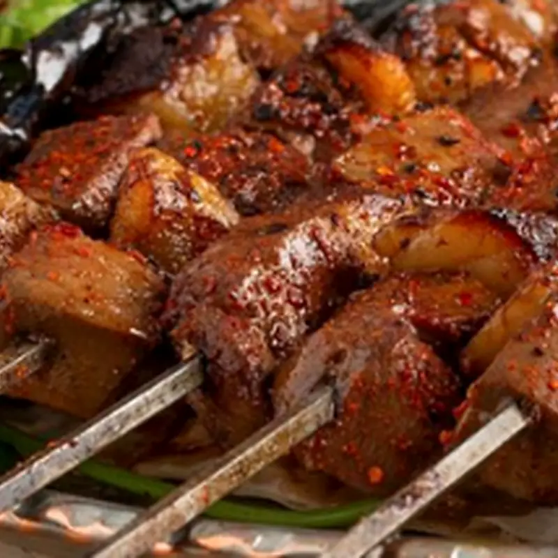
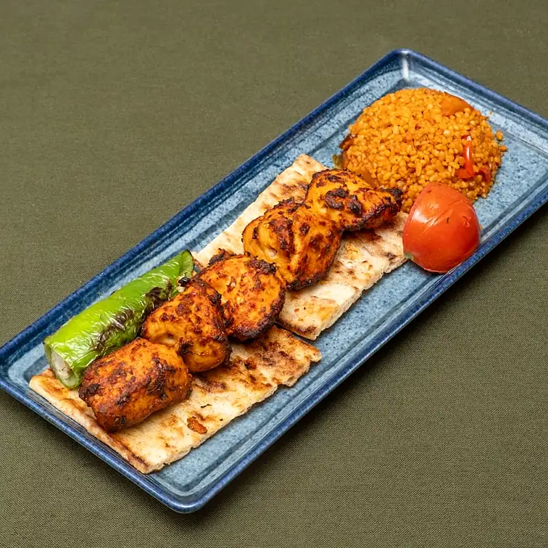
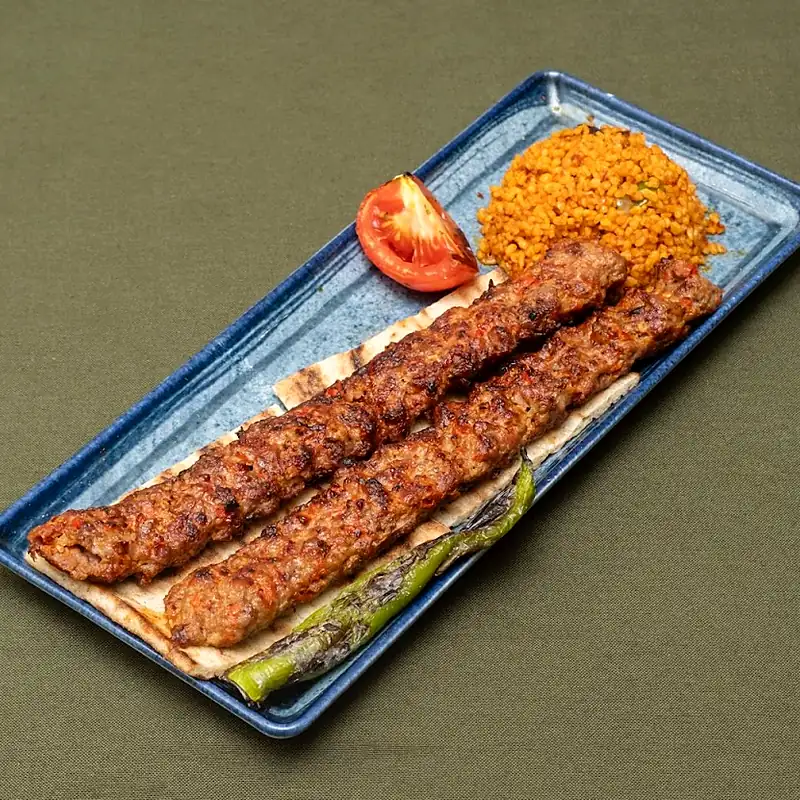
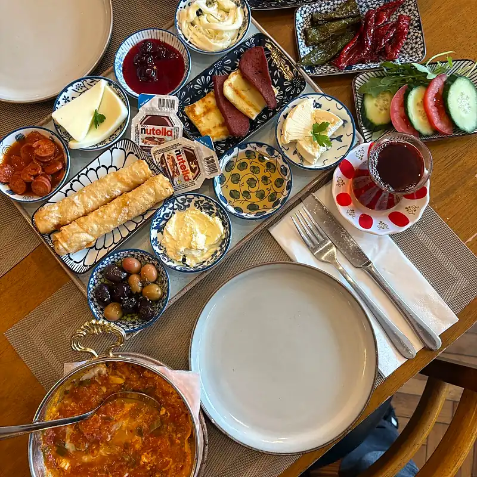
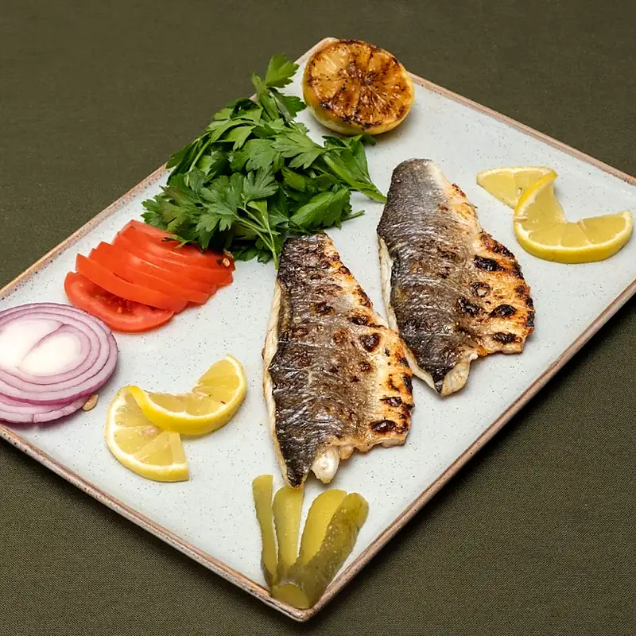
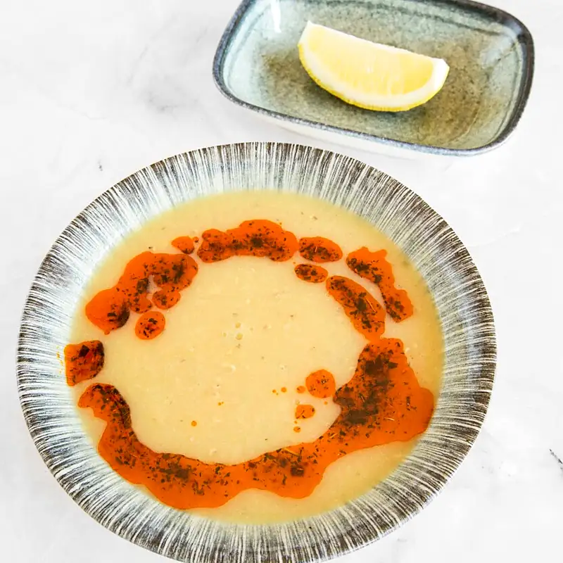

Adana Kebab
Minced lamb, traditional spice and open-flame char.
Southgate · London · HMC-certified halal
Charcoal-grilled Turkish favourites, generous sharing plates and a proper weekend breakfast.

7 The BroadwayA Southgate table
Chef Boncuk is a proud Faith Foods Ltd kitchen, bringing Turkish grilling tradition to a family-friendly neighbourhood restaurant.
Off the grill
come hungry ↘






Lunch, dinner, weekend breakfast
Weekend Turkish breakfast is served 10 am–2 pm. Delivery and collection windows update live on Just Eat and Uber Eats.
Gather at Boncuk
Planning a group meal or special occasion? Message the restaurant with your date and party size.
Group booking on WhatsApp